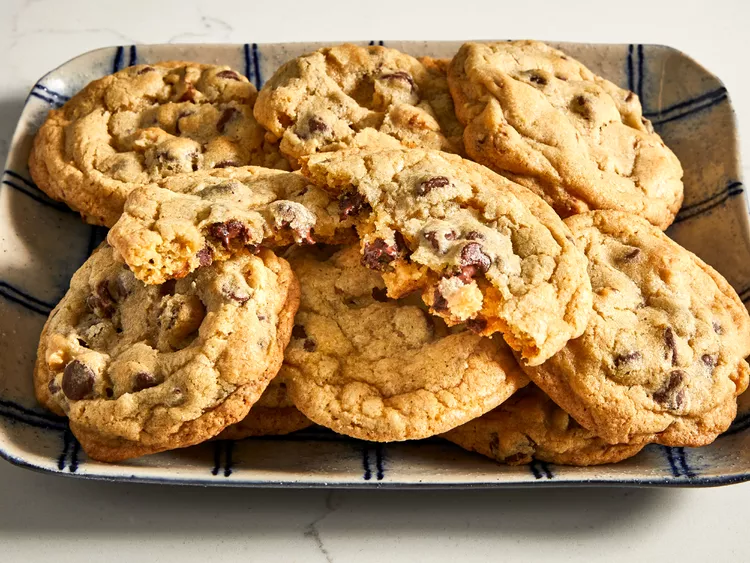

Home
Chocolate Chips Recipe
Recipe adapted from:
Allrecipes

Credit: Dotdash Meredith Food Studio
Description
This chocolate chip cookie recipe makes dozens of cookies with crisp edges, chewy centers, and melty chocolate chips. It is truly the best!
Ingredients
- 1 cup butter, softened
- 1 cup white sugar
- 1 cup packed brown sugar
- 2 large eggs
- 2 teaspoon vanilla extract
- 1 teaspoon baking soda
- 2 teaspoon hot water
- ½ teaspoon salt
- 3 cups all-purpose flour
- 2 cups semisweet chocolate chips
- 1 chopped walnuts
Steps
- Gather your ingredients, making sure your butter is softened, and your eggs are room temperature.
- Preheat the oven to 250 ° F(175 ° C). Beat butter, white sugar, and brown sugar in a big bowl with a mixer until smooth and creamy.
- Beat eggs, one at a time, then stir in vanilla.
- Dissolve baking soda in hot water; add to batter along with salt and mix until combined
- Stir in flour, chocolate chips, and walnuts until a soft dough forms.
- Drop rounded spoonful of cookie dough 2 inches apart onto ungreased baking sheets.
- Bake in the preheated oven until edges are lightly browned, about 10 minutes.
- Cool on the baking sheets briefly, removing to a wire rack to cool completely
- Store in an airtight container or serve immediately and enjoy!